Интерфейс для TV
Крупные состояния фокуса, понятные ряды и управление D-pad без мыши.
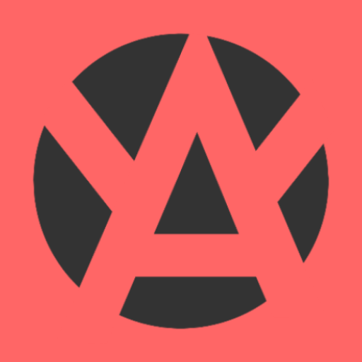
YummyTVНеофициальный Android TV клиент
YummyTV переносит каталог, подборки, продолжение просмотра и гибкий видеоплеер в нативный интерфейс, рассчитанный на большой экран и пульт.
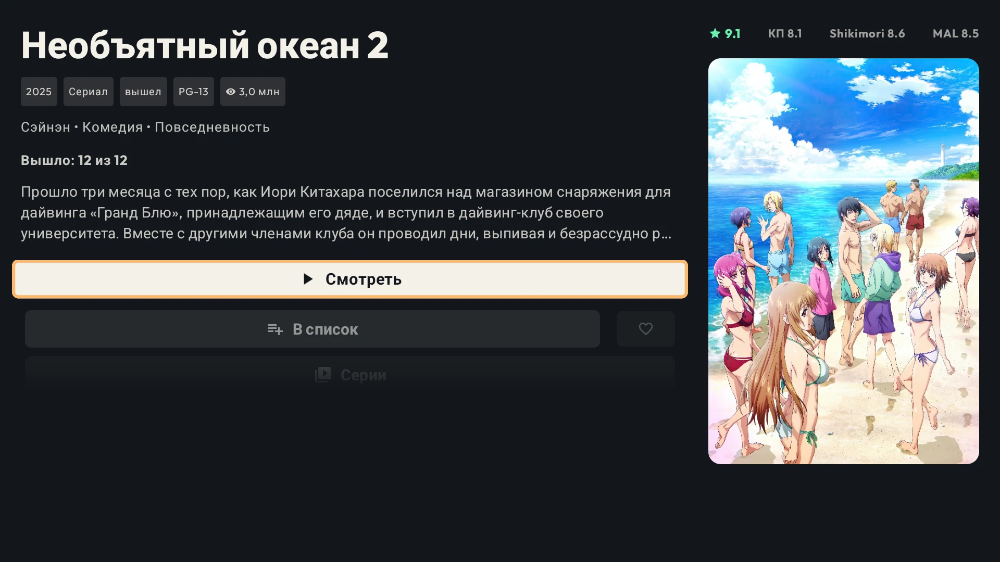
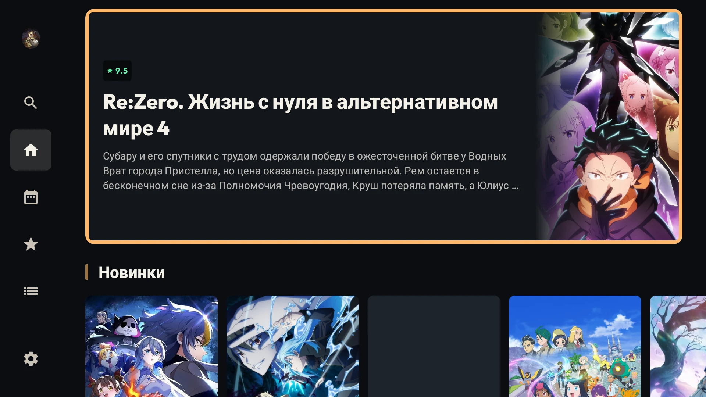
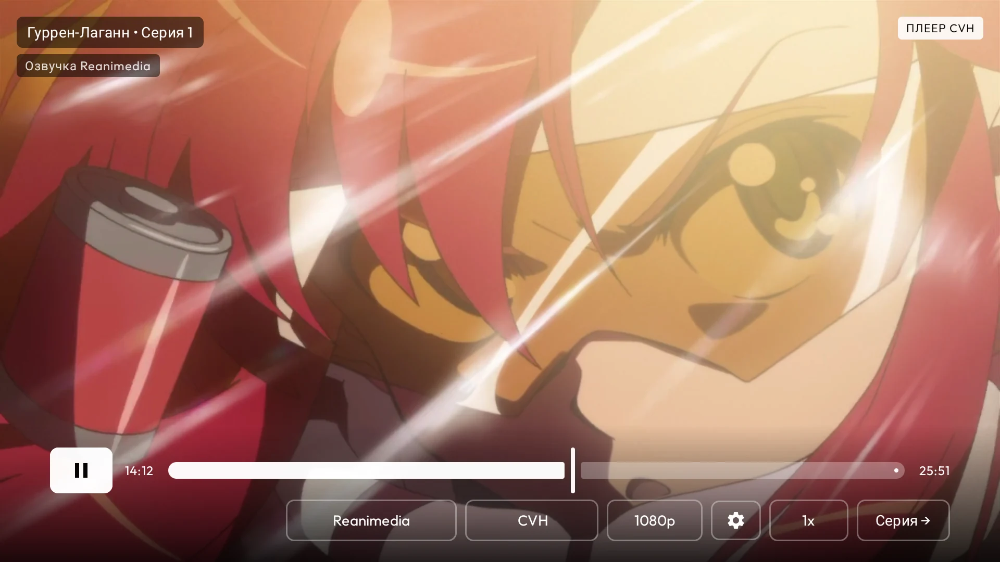
Для просмотра с дивана
Крупные состояния фокуса, понятные ряды и управление D-pad без мыши.
Ищи тайтлы, открывай подборки и переходи к сериям прямо с телевизора.
Возвращайся к последним эпизодам и быстро открывай нужную серию.
Выбирай качество, озвучку и видеобалансер, не покидая TV-интерфейс.
Экраны приложения
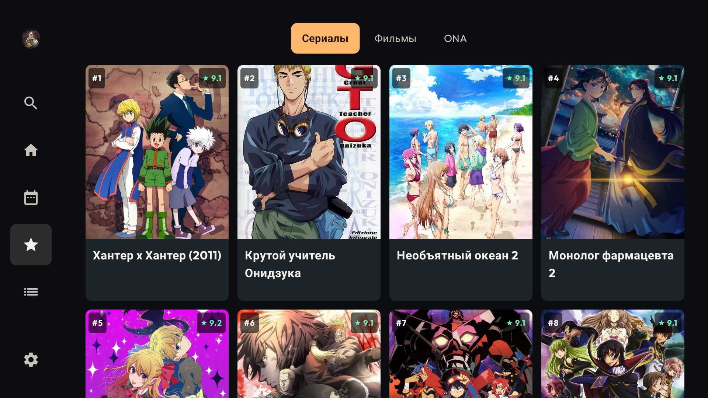
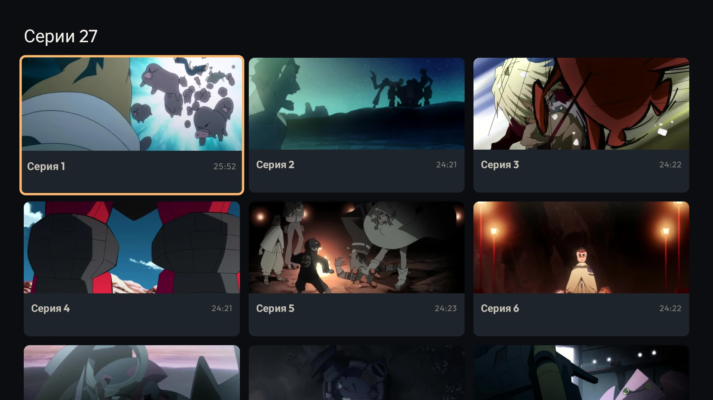
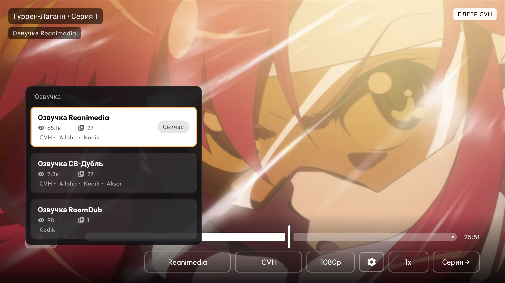
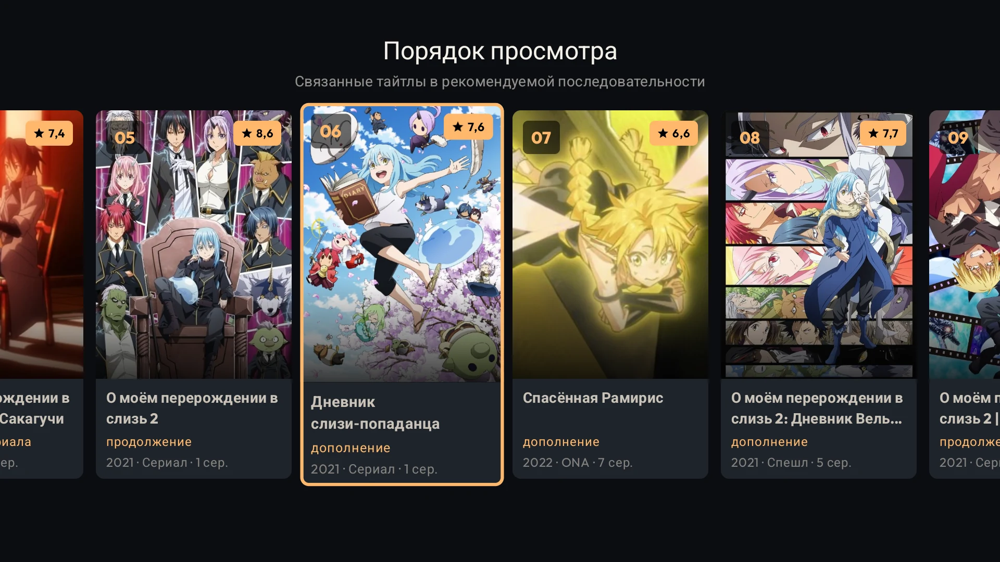
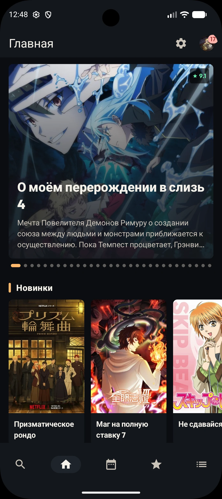
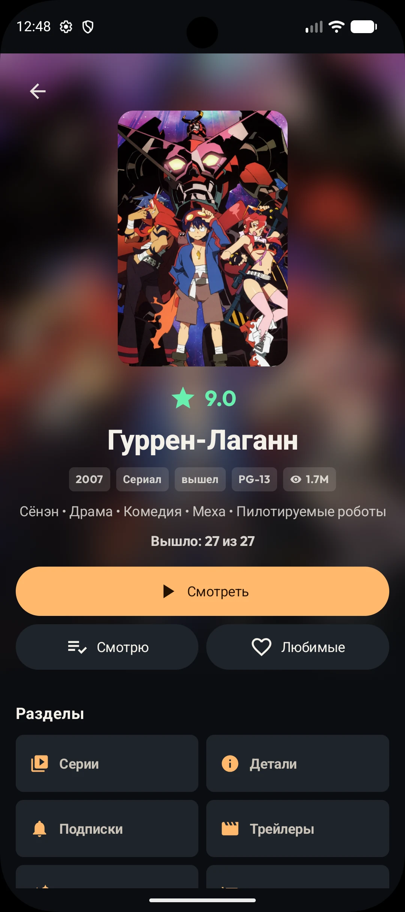
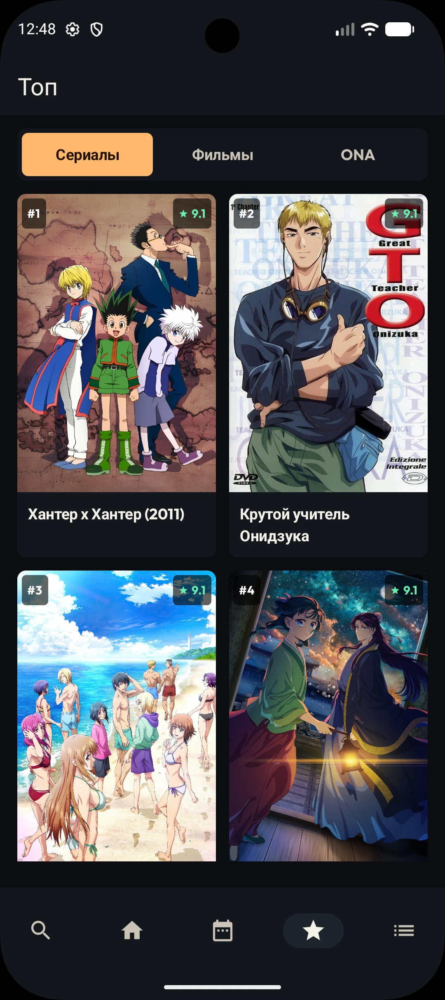
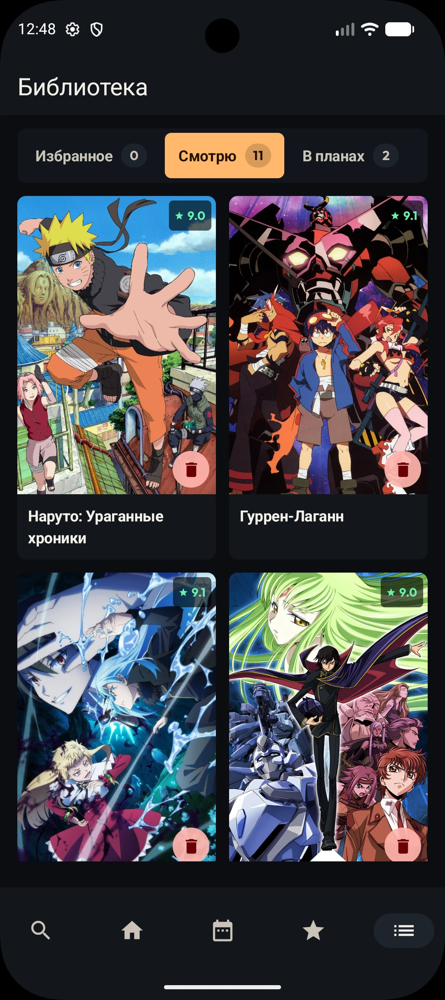
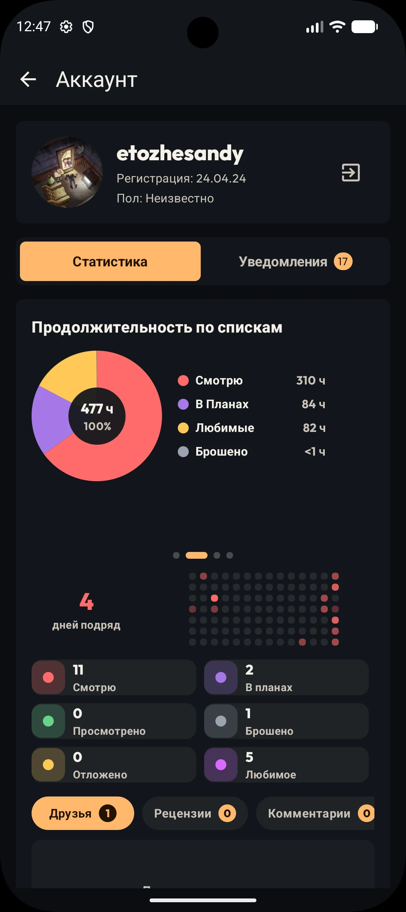
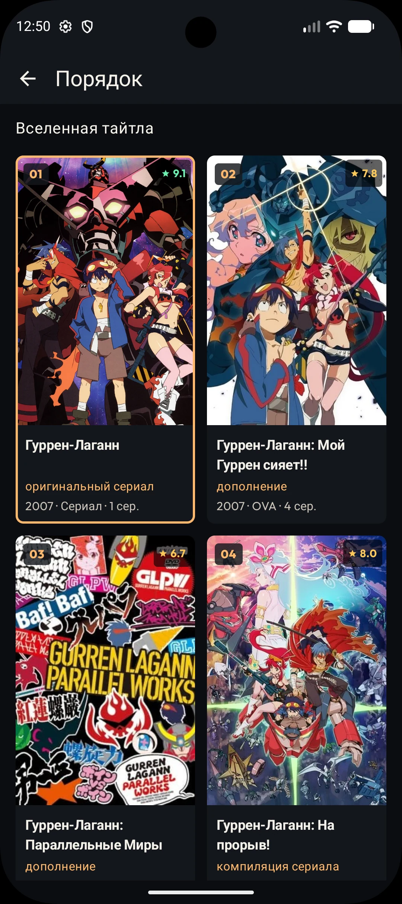
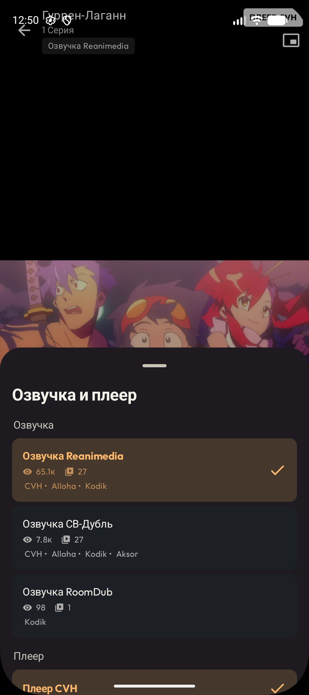
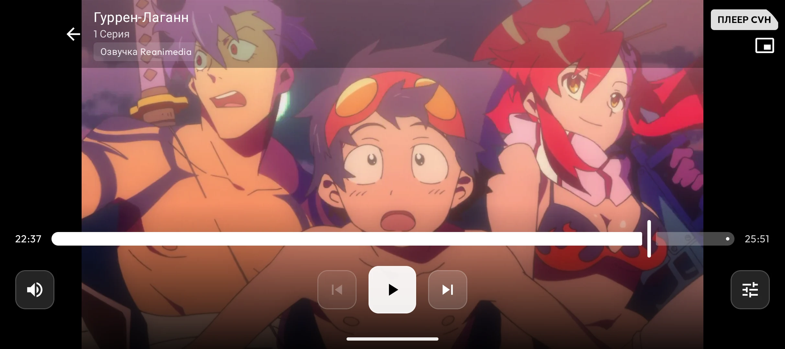
Установи приложение
Передай APK на телевизор или Android TV приставку, открой файл и разреши установку из выбранного источника, если Android попросит подтверждение.
YummyTV не хранит и не распространяет контент. Приложение зависит от доступности YummyAnime и сторонних видеобалансеров.